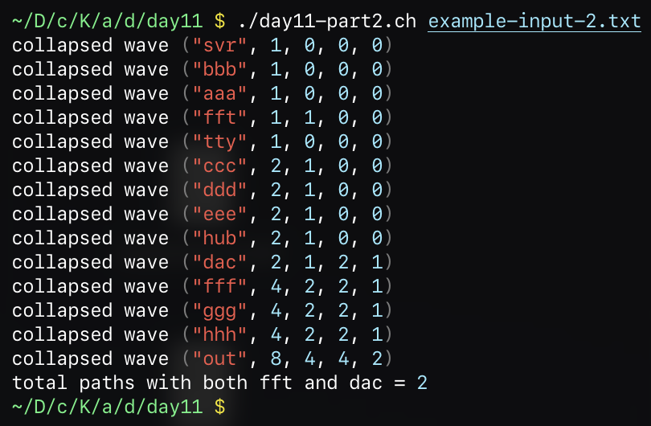

Advent of Code 2025 in Charly
Day 11
This article is part of my series on implementing each Advent of Code 2025 challenge in my own programming language Charly.
Part 1
Today’s puzzle asked you to help the elves debug the server rack controlling the reactor powering the entire facility. You are given a list of devices and their outputs:
aaa: you hhh
you: bbb ccc
bbb: ddd eee
ccc: ddd eee fff
ddd: ggg
eee: out
fff: out
ggg: out
hhh: ccc fff iii
iii: outEach entry gives the name of a device followed by a list of devices to which its outputs are routed.
To solve the puzzle, you must determine how many different paths lead
from the you machine to the out machine.
I implemented this as a BFS over all possible paths, counting how many valid ones I found.
import hashmap as HashMap
const input_path = ARGV[1]
const lines = readfile(input_path).lines()
const device_connections = HashMap()
lines.each(->(line) {
const entries = line.split(" ")
const device = entries.first().dropLast()
const out_connections = entries.dropFirst()
device_connections.set(device, out_connections)
})
const initial_path = ["you"]
const target = "out"
const queue = [initial_path]
const found_paths = []
while queue.notEmpty() {
const path = queue.pop_front()
const last = path.last()
if last == target {
found_paths.push(path)
continue
}
const out_devices = device_connections.at(last)
out_devices.each(->(name) {
queue.push([...path, name])
})
}
found_paths.each(->(path) {
print(path)
})
print("found {found_paths.length} paths")Part 2
Part 2 modified the puzzle slightly. Instead of going from
you to out, you had to count the number of
paths from svr to out while
also ensuring that each path passes through both
dac and fft.
New example input:
svr: aaa bbb
aaa: fft
fft: ccc
bbb: tty
tty: ccc
ccc: ddd eee
ddd: hub
hub: fff
eee: dac
dac: fff
fff: ggg hhh
ggg: out
hhh: outMy first approach was to add a condition to the
found a path logic, checking if dac and
fft were in the path at least once. Because the shortest
paths between svr and out are much longer than
in part 1, this approach would have taken forever.
Addendum:
You can dramatically reduce the runtime by caching the set of visited machines per path. I didn’t think of this at the time of implementing it, which is why I came up with the following monstrosity.
Instead of doing a BFS over sequence-space, I came up with a
different approach. I keep a list of uncollapsed Waves,
each representing a set of paths that travel through the graph
concurrently. A wave collapses when all of its input waves have
collapsed.
Once all waves have collapsed, I can read the statistics from the
out wave and determine the total number of paths that
travelled from svr to out while also passing
through fft and dac.
Addendum:
I have been informed that this is essentially
counting paths in a DAG using topological DP.
I start off by pre-processing the input data a little bit. From each machine’s output devices, I construct the corresponding list of input devices.
const lines = readfile(input_path).lines()
const devices = []
const device_out_connections = HashMap()
const device_in_connections = HashMap()
lines.each(->(line) {
const entries = line.split(" ")
const device = entries.first().dropLast()
const out_connections = entries.dropFirst()
devices.push(device)
device_out_connections.set(device, out_connections)
device_in_connections.set(device, [])
})
device_in_connections.set("svr", ["svr"])
device_in_connections.set("out", [])
device_out_connections.set("out", [])
devices.each(->(device) {
const outconns = device_out_connections.at(device)
outconns.each(->(out) {
device_in_connections.at(out).push(device)
})
})I then declare the Wave class and set up the initial
data structures:
class Wave {
property name
property to_here
property with_fft
property with_dac
property with_both
}
const collapsed_waves = HashMap().also(->(map) {
map.set("svr", Wave("svr", 1, 0, 0, 0))
})
let wavefront = HashMap().also(->(map) map.set("svr", true)).keys()And finally the heart of the implementation:
while wavefront.notEmpty() {
const next_wavefront = HashMap()
wavefront.each(->(wave) {
const in_waves = device_in_connections.at(wave)
const can_be_collapsed = in_waves.all(->(in_name) collapsed_waves.contains(in_name))
if can_be_collapsed {
const collapsed_wave = Wave(wave, 0, 0, 0, 0)
const collapsed_in_waves = in_waves.map(->(in_name) collapsed_waves.at(in_name))
collapsed_wave.to_here = collapsed_in_waves.map(->(wave) wave.to_here).sum()
collapsed_wave.with_fft = collapsed_in_waves.map(->(wave) wave.with_fft).sum()
collapsed_wave.with_dac = collapsed_in_waves.map(->(wave) wave.with_dac).sum()
collapsed_wave.with_both = collapsed_in_waves.map(->(wave) wave.with_both).sum()
collapsed_waves.set(wave, collapsed_wave)
if wave == "fft" collapsed_wave.with_fft = collapsed_wave.to_here
if wave == "dac" collapsed_wave.with_dac = collapsed_wave.to_here
if collapsed_wave.with_both == 0 {
const with_fft = collapsed_wave.with_fft
const with_dac = collapsed_wave.with_dac
collapsed_wave.with_both = with_fft.min(with_dac)
}
device_out_connections.at(wave).each(->(out_name) {
next_wavefront.set(out_name, true)
})
} else {
next_wavefront.set(wave, true)
}
})
wavefront = next_wavefront.keys()
}
const out_wave = collapsed_waves.at("out")
print("total paths with both fft and dac =", out_wave.with_both)
Running with example data and some log output
Changes to the stdlib / VM
Bug fixes in the virtual machine:
- List multiplication was broken due to an extra
return kNaNthat slipped in, preventing the rest of the method from executing.
Libraries added to the standard library:
hashmapImplements a primitive, quick-and-dirty hashmap
Methods modified:
List::findNow returns the found value instead of the index
Methods added to the standard library:
String::takeFirst(n)FirstncharactersString::takeLast(n)LastncharactersString::dropFirst(n)String without the firstncharactersString::dropLast(n)String without the lastncharactersList::findIndex(x)Index of the first element equal tox, ornullList::findIndexBy(pred)Index of the first element wherepred(element)is true, ornull
You can find the individual commits below:
37c9f9aList::find returns value not indexea549e7Added drop and take family of methods to String1b0563fAdd super primitive hashmap to stdlib3e52e7eFix list multiplication returning NaNbfbfb6aAdd List::findIndex and List::findIndexBya008192HashMap fixes6904f00Make HashMap::size, empty, notEmpty O(1)
Links
Copyright © 2024 - 2025 Leonard Schütz | Attributions This post was written by a human and reviewed and proof-read by LLMs